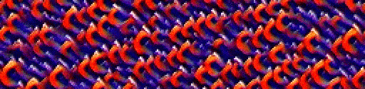
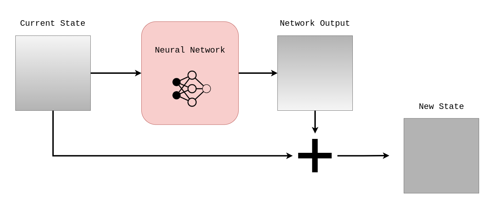
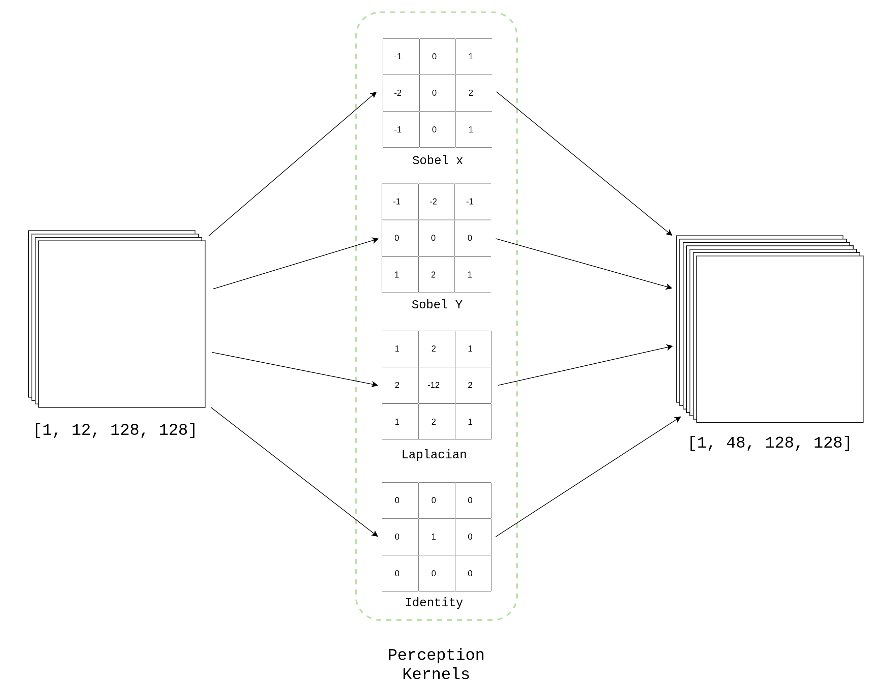
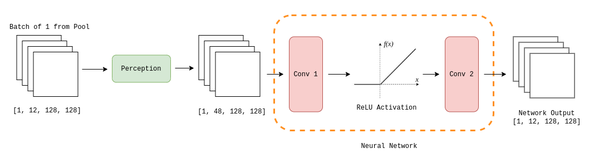
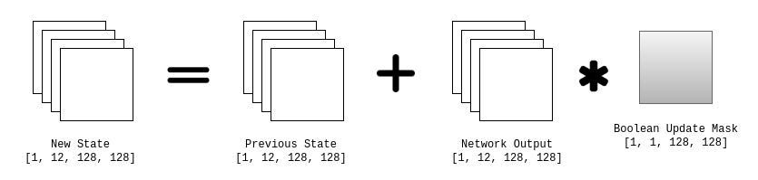
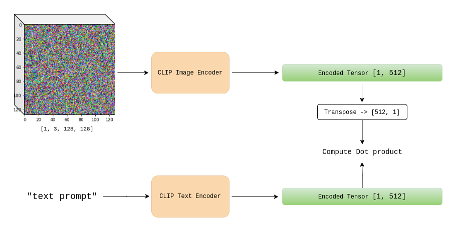

CLIP Guided Neural Cellular Automata using PyTorch

The gif above was generated using outputs from a Neural Cellular Automata model steered by OpenAI's CLIP (language model trained on image-text pairs) using the text prompt "The PyTorch Logo".
Primer on Neural CA
Classical Cellular Automata employs a set of predefined rules set by humans to update the grid state. In neural CA, we let a neural network decide the rules as it trains and we guide this process using the language of loss functions.

Once the network is trained, we can iteratively run forward passes and eventually get closer to our target grid-state.
Leveraging CLIP
OpenAI's CLIP (Contrastive Language-Image Pre-training) is trained on image-text pairs.
The CLIP model consists of 2 sub-models:
- Text Encoder
- Image Encoder
Given an image and a text sequence, we could compare their encoding vectors (of the same dimension) to measure how relevant the caption is to the image.
Cellular automata states can be encoded and then compared to text-encodings for a certain piece of text. In order top quantify this comparision, one could compute the cosine similarity or the dot product.
The CA Model
The CA model that I used is heavily inspired from the architecture used in the Self Organizing Textures Paper.
We start out with a pool of noise tensors, with shape ``[pool_size, num_channels, width, height]``. Let's trace along one forward pass for a batch of 1 sampled from the pool
- The first step is to Convolve the input tensor ``
[1, 12, 128, 128]`` with four 3x3 fiilters. The idea behind this is to give the individual cell an idea of its neighboring pixels.

- The resulting tensor ``
[1,48,128,128]`` is then fed into 2 successive Convolutional Layers.

- The model output is added to the input but before we perform this addition, we apply a boolean update mask over the network output (update vector). This operation can be also seen as an application of per-cell dropout.

We replace samples in the pool that were sampled for the batch with the output states from the training step over this batch.
Guiding the CA Model
Our target is a string of text, this text is encoded using the CLIP text encoder.
We only consider the first 3 channels (as RGB) of the 12 channel samples when computing the loss. The CLIP image encoder is used to encode a batch of images, and is compared to the encoded target text.

We also use penalize the model for pixel values lying beyond the range of ``(-1.0, 1.0)`` which we reser to as the overflow loss. The loss value of a batch could be represented as:
Results